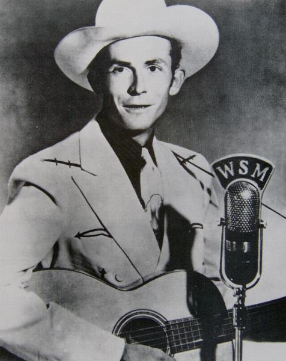

| Pictorial | ||
| Back 09/28 |
 | Next 11/28 |
The troubled, towering genius of country music, Hank Williams (1923-1953) offered songs of honky-tonk exhilaration (Hey Good Lookin') and chilly despair (Your Cheatin' Heart, I'll Never Get Out Of This World Alive). |